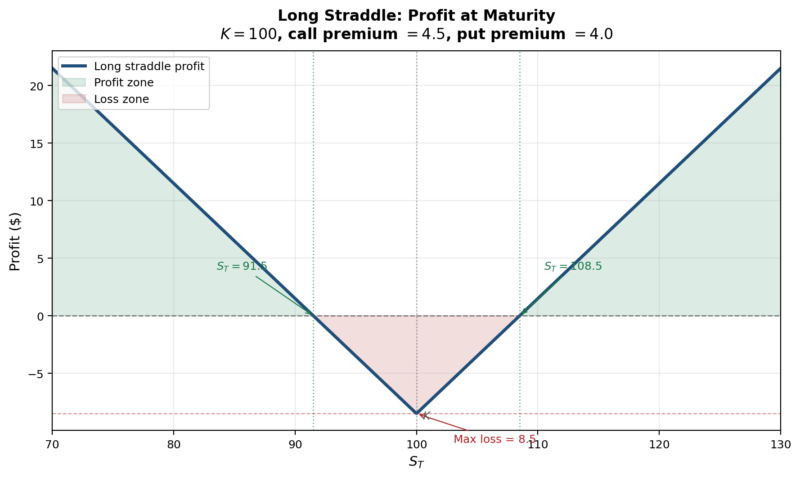

Sukrit Mittal Franklin Templeton Investments
In Lectures 12 and 13, we developed the theory of option pricing — from no-arbitrage bounds and put-call parity to binomial trees, the CRR formula, and the Black-Scholes equation.
That answered the question:
What is this contract worth under no-arbitrage?
This lecture asks a different question:
Given this contract, what position should I take, and how should I manage its risk over time?
If a position has value \[ V = V(S,\sigma,r,t), \] then engineering means choosing additional traded positions so that the combined portfolio has desired properties:
Pricing values the machine. Engineering decides how to use it.
The same derivative can serve three very different purposes:
Example: a put option on an equity index.
Same instrument. Same mathematics. Different objective function.
In Lecture 11, we saw that forwards serve all three purposes in the context of linear payoffs. Options extend this to nonlinear payoffs — and nonlinearity is where the real engineering begins.
Options create nonlinear exposure.
That is their value. It is also their danger.
For a small change in market conditions, the option value changes approximately as \[ \Delta V \approx \frac{\partial V}{\partial S}\Delta S + \frac{1}{2}\frac{\partial^2 V}{\partial S^2}(\Delta S)^2 + \frac{\partial V}{\partial t}\Delta t + \frac{\partial V}{\partial \sigma}\Delta \sigma + \frac{\partial V}{\partial r}\Delta r. \]
This is the second-order Taylor expansion of \(V(S,\sigma,r,t)\) — the same tool we use throughout calculus, now applied to risk.
Each term has a name and a meaning:
| Term | Name | Risk |
|---|---|---|
| \(\frac{\partial V}{\partial S}\Delta S\) | Delta | Directional price risk |
| \(\frac{1}{2}\frac{\partial^2 V}{\partial S^2}(\Delta S)^2\) | Gamma | Curvature / large-move risk |
| \(\frac{\partial V}{\partial t}\Delta t\) | Theta | Time decay |
| \(\frac{\partial V}{\partial \sigma}\Delta \sigma\) | Vega | Volatility risk |
| \(\frac{\partial V}{\partial r}\Delta r\) | Rho | Interest rate risk |
A hedge is the attempt to neutralize one or more of these terms using other traded instruments.
A forward position has a linear payoff. Its slope with respect to the underlying is constant. A single offsetting position — entered once and never touched — neutralizes the risk completely. This is the kind of hedging we did in Lecture 11.
An option cannot be hedged this way.
Why not? Because the option’s slope changes with the underlying price. In Lecture 13, the one-step binomial hedge ratio was \[ x = \frac{f_u - f_d}{S_0(u - d)}. \]
In a multi-step tree, this ratio changes at every node. In continuous time, it changes at every instant.
So an option hedge must usually be:
Static hedging works for linear payoffs. Dynamic hedging is the price of nonlinearity.
The first and most important sensitivity is delta: \[ \boxed{\Delta = \frac{\partial V}{\partial S}} \]
In Lecture 13, we saw that \(\Delta_{\text{call}} = \mathcal{N}(d_1)\) for a European call under Black-Scholes. Delta measures the local change in the option value when the stock price changes by \(\$1\).
For a small move, \[ \Delta V \approx \Delta \, \Delta S. \]
If we hold one option and short \(\Delta\) shares of stock, the portfolio \[ \Pi = V - \Delta S \] has local stock-price sensitivity \[ \frac{\partial \Pi}{\partial S} = \frac{\partial V}{\partial S} - \Delta = 0. \]
So delta hedging removes the first-order effect of stock-price movements.
Only the first-order effect.
This is equivalent to the replicating portfolio from Lecture 13 — but viewed from the perspective of a trader managing risk, not a theorist deriving a price.
Suppose a trader is short 1,000 European call options.
Current stock price: \(S_0 = 100\). Each call has delta \(\Delta_C = 0.62\).
The short option book has total delta \[ \Delta_{\text{book}} = -1{,}000 \times 0.62 = -620. \]
To become delta-neutral, the trader buys 620 shares.
If the stock rises by \(\$1\): \[ \Delta V_{\text{options}} \approx -1{,}000 \times 0.62 \times 1 = -620 \] \[ \Delta V_{\text{stock}} = +620 \times 1 = +620 \] \[ \Delta V_{\text{portfolio}} \approx -620 + 620 = 0 \quad \checkmark \]
First-order risk is neutralized.
But only at that instant, and only for small moves.
Suppose after the stock move, the call delta rises from \(0.62\) to \(0.69\).
Now the short option book has delta \[ -1{,}000 \times 0.69 = -690. \]
But the trader still owns only 620 shares.
The hedge is now short 70 deltas. To restore neutrality, the trader must buy 70 more shares.
If the stock then falls and delta drops to \(0.55\), the book delta becomes \(-550\), but the trader holds 690 shares — now 140 deltas too long. Sell 140 shares.
This is the central fact of option hedging:
The model assumes continuous rebalancing. Markets do not. The gap between theory and practice is where hedging cost lives.
There is a deeper reason delta matters. It connects hedging to pricing.
Take a short time interval \(dt\). Using the second-order Taylor expansion of \(V(S,t)\): \[ dV \approx V_t \, dt + V_S \, dS + \frac{1}{2}V_{SS}(dS)^2 \] where subscripts denote partial derivatives: \(V_t = \frac{\partial V}{\partial t}\), \(V_S = \frac{\partial V}{\partial S}\), \(V_{SS} = \frac{\partial^2 V}{\partial S^2}\).
In the Black-Scholes model, the stock follows geometric Brownian motion with volatility \(\sigma\), so heuristically \[ (dS)^2 \approx \sigma^2 S^2 \, dt. \]
Substituting: \[ dV \approx V_t \, dt + V_S \, dS + \frac{1}{2}\sigma^2 S^2 V_{SS} \, dt \]
\[ = \left(V_t + \frac{1}{2}\sigma^2 S^2 V_{SS}\right)dt + V_S \, dS. \]
The \(dS\) term is random. The \(dt\) term is deterministic.
Now form the hedged portfolio: \[ \Pi = V - \Delta S \]
Its change is: \[ d\Pi = dV - \Delta \, dS \]
\[ = \left(V_t + \frac{1}{2}\sigma^2 S^2 V_{SS}\right)dt + V_S \, dS - \Delta \, dS \]
\[ = \left(V_t + \frac{1}{2}\sigma^2 S^2 V_{SS}\right)dt + (V_S - \Delta) \, dS. \]
Choose \(\Delta = V_S\). Then the random \(dS\) term disappears: \[ \boxed{d\Pi = \left(V_t + \frac{1}{2}\sigma^2 S^2 V_{SS}\right)dt} \]
The portfolio is locally riskless — its return over \(dt\) involves no randomness. This is the continuous-time analogue of the one-step replication from Lecture 13.
If \(\Pi = V - V_S S\) is locally riskless, then no-arbitrage requires it to earn the risk-free rate: \[ d\Pi = r\Pi \, dt = r(V - V_S S) \, dt. \]
Equating the two expressions for \(d\Pi\): \[ \left(V_t + \frac{1}{2}\sigma^2 S^2 V_{SS}\right)dt = r(V - V_S S) \, dt. \]
Dividing by \(dt\) and rearranging: \[ V_t + \frac{1}{2}\sigma^2 S^2 V_{SS} = rV - rSV_S \]
\[ \boxed{V_t + \frac{1}{2}\sigma^2 S^2 V_{SS} + rSV_S - rV = 0} \]
This is the Black-Scholes partial differential equation.
Verify: The Black-Scholes call formula \(c = S_0\mathcal{N}(d_1) - Ke^{-rT}\mathcal{N}(d_2)\) from Lecture 13 satisfies this PDE. Every closed-form option price we have encountered is a solution to this equation with appropriate boundary conditions. \(\checkmark\)
The PDE deserves careful reading.
Each term has a clear meaning:
| Term | Meaning |
|---|---|
| \(V_t\) | Time decay (theta) |
| \(\frac{1}{2}\sigma^2 S^2 V_{SS}\) | Convexity gain from gamma |
| \(rSV_S\) | Cost of financing the delta hedge |
| \(rV\) | Required return on the option position |
The equation says: for any option, theta + gamma gain + financing cost = required return.
This has three consequences:
Option pricing and hedging are not separate ideas. The pricing formula exists because dynamic hedging exists.
Delta is the trading strategy hidden inside the formula. The Black-Scholes price is the cost of the hedging program that replicates the option.
The real-world probability \(p\) does not appear. Just as in the binomial tree (Lecture 13), only the risk-neutral measure matters.
Lecture 13 emphasized the price. This lecture emphasizes the implementation.
Theory says: rebalance continuously. Practice says: rebalance when you can afford to.
The following table shows a delta hedge for a short position of 1,000 European calls (\(K = 100\), \(T = 20\) weeks, \(\sigma = 20\%\), \(r = 5\%\)) rebalanced weekly.
| Week | Stock Price | Call Delta | Shares Held | Shares Traded | Trade Cost ($) | Cumulative Cost ($) |
|---|---|---|---|---|---|---|
| 0 | 100.00 | 0.522 | 522 | +522 | 52,200 | 52,200 |
| 1 | 101.50 | 0.568 | 568 | +46 | 4,669 | 56,869 |
| 2 | 99.20 | 0.475 | 475 | \(-93\) | \(-9,226\) | 47,643 |
| 3 | 102.00 | 0.582 | 582 | +107 | 10,914 | 58,557 |
| 4 | 104.50 | 0.691 | 691 | +109 | 11,391 | 69,948 |
| 5 | 103.80 | 0.670 | 670 | \(-21\) | \(-2,180\) | 67,768 |
Reading the table: When the stock rises, delta increases, forcing the hedger to buy more shares (buy high). When the stock falls, delta decreases, forcing the hedger to sell shares (sell low). Delta hedging systematically buys high and sells low.
This is not a flaw. It is the cost of replication.
In theory, continuous rebalancing makes the hedge exact. In practice, discrete rebalancing introduces error.
Over one rebalancing interval, the hedging error is approximately \[ \epsilon \approx \frac{1}{2}\Gamma(\Delta S)^2 - \frac{1}{2}\sigma^2 S^2 \Gamma \, \Delta t. \]
The first term is the actual gamma P&L from the realized stock move. The second is the expected gamma P&L under the model. The difference is random.
Key insight: The hedging error is proportional to \(\Gamma\). Options with high gamma — typically those near the money and close to expiry — are the most expensive to hedge in practice.
This is why option dealers care deeply about gamma. It is not just a risk measure. It is a measure of hedging cost.
The theoretical Black-Scholes price assumes zero hedging cost (continuous rebalancing). The actual cost of running the hedge may exceed or fall short of this theoretical value, depending on the realized path of the stock.
Once delta is neutralized, the leading residual risks are \[ \Delta \Pi \approx \frac{1}{2}\Gamma (\Delta S)^2 + \Theta \, \Delta t + \mathcal{V}\,\Delta \sigma + \rho \, \Delta r \] where \[ \Gamma = \frac{\partial^2 V}{\partial S^2}, \qquad \Theta = \frac{\partial V}{\partial t}, \qquad \mathcal{V} = \frac{\partial V}{\partial \sigma}, \qquad \rho = \frac{\partial V}{\partial r}. \]
So delta hedging removes directional risk, but not:
This is why serious derivatives risk management never stops at delta.
In Lecture 13, we computed the Greeks from the Black-Scholes formula. Here the emphasis is different.
The Greeks are not descriptive statistics. They are hedge targets.
Each Greek answers a specific question for the risk manager:
| Greek | Symbol | Question it answers |
|---|---|---|
| Delta | \(\Delta\) | How many shares offset my directional risk? |
| Gamma | \(\Gamma\) | How fast does my hedge become stale? |
| Theta | \(\Theta\) | How much do I gain or lose each day from time decay? |
| Vega | \(\mathcal{V}\) | How exposed am I to a change in implied volatility? |
| Rho | \(\rho\) | How exposed am I to a shift in interest rates? |
A trader who says “I am hedged” but cannot say to which Greek is not hedged in any meaningful sense.
For long vanilla options:
For short vanilla options:
This is not accidental.
From the Black-Scholes PDE, for a delta-neutral portfolio (\(\Delta = 0\), so \(V_S S\) term drops from consideration): \[ \Theta + \frac{1}{2}\sigma^2 S^2 \Gamma = r\Pi. \]
For a portfolio close to zero value (\(\Pi \approx 0\)), this gives \[ \boxed{\Theta \approx -\frac{1}{2}\sigma^2 S^2 \Gamma} \]
Gamma and theta are mechanically linked. A trader who is long gamma must pay theta. A trader who collects theta must bear gamma risk.
There is no free theta.
A trader is short 500 ATM call options (\(K = 100\), \(S_0 = 100\), \(\sigma = 25\%\), \(T = 3\) months, \(r = 5\%\)).
From the Black-Scholes formulas in Lecture 13:
\[ \Gamma_{\text{call}} = \frac{\mathcal{N}'(d_1)}{S_0 \sigma \sqrt{T}} = \frac{0.3970}{100 \times 0.25 \times 0.5} = 0.0318 \]
\[ \Theta_{\text{call}} = -\frac{S_0 \mathcal{N}'(d_1)\sigma}{2\sqrt{T}} - rKe^{-rT}\mathcal{N}(d_2) = -9.95 - 2.39 = -12.34 \text{ per year} \]
The short book has total Greeks: \[ \Gamma_{\text{book}} = -500 \times 0.0318 = -15.9 \] \[ \Theta_{\text{book}} = -500 \times (-12.34) = +6{,}170 \text{ per year} \approx +\$16.90 \text{ per day} \]
Interpretation: The trader collects about \(\$17\) per day in time decay. But if the stock moves sharply — say \(\Delta S = 5\) — the gamma loss is approximately \[ \frac{1}{2}|\Gamma_{\text{book}}|(\Delta S)^2 = \frac{1}{2} \times 15.9 \times 25 = \$199. \]
Twelve quiet days of theta barely cover one sharp move. This is the risk of being short gamma.
Vega measures sensitivity to implied volatility: \[ \mathcal{V} = \frac{\partial V}{\partial \sigma}. \]
From Lecture 13: \(\mathcal{V} = S_0 \sqrt{T}\,\mathcal{N}'(d_1)\). It is always positive for both calls and puts.
Long options are long vega. Rising volatility makes optionality more valuable.
This matters most when:
In the 2008 financial crisis, implied volatility on S&P 500 options (the VIX) surged from 20% to over 80%. Traders who were short vega without adequate hedging suffered catastrophic losses.
Rho measures sensitivity to interest rates: \[ \rho = \frac{\partial V}{\partial r}. \]
For many short-dated equity options, rho is secondary. For long-dated contracts, FX options, and interest rate products, it is not.
The practical problem is usually not “hedge one option.”
It is:
Hedge an entire book with many strikes, maturities, and underlyings.
If a portfolio has total sensitivities \((\Delta_P, \Gamma_P, \mathcal{V}_P, \rho_P, \ldots)\), then the hedge is constructed by combining instruments so that selected sensitivities sum to zero.
This is replication again — but instead of matching terminal payoffs exactly, we match local sensitivities.
Suppose a portfolio has total delta \(\Delta_P\) and gamma \(\Gamma_P\). We use:
Stock has zero gamma, so stock alone cannot fix gamma. We need the hedge option.
To neutralize gamma: \[ \Gamma_P + m\Gamma_H = 0 \]
To neutralize delta (after the gamma hedge changes our delta by \(m\Delta_H\)): \[ \Delta_P + n + m\Delta_H = 0 \]
Solving: \[ \boxed{m = -\frac{\Gamma_P}{\Gamma_H}}, \qquad \boxed{n = -\Delta_P - m\Delta_H} \]
This is a linear system. Risk management becomes linear algebra.
Why gamma first, then delta? Because only options carry gamma. Stock can adjust delta but not gamma. So we must use the option to fix gamma, then use stock to clean up the residual delta. The order matters.
Suppose an OTC options book has: \[ \Delta_P = -520, \qquad \Gamma_P = -18. \]
A listed option available for hedging has: \[ \Delta_H = 0.25, \qquad \Gamma_H = 0.06. \]
Step 1 — Gamma neutrality: \[ m = -\frac{-18}{0.06} = 300 \]
Buy 300 hedge options.
Step 2 — Delta adjustment from the gamma hedge: \[ 300 \times 0.25 = 75 \]
Step 3 — Stock position for delta neutrality: \[ n = -(-520) - 75 = 445 \]
Buy 445 shares.
Verification: \[ \text{Total delta} = -520 + 445 + 300 \times 0.25 = -520 + 445 + 75 = 0 \quad \checkmark \] \[ \text{Total gamma} = -18 + 300 \times 0.06 = -18 + 18 = 0 \quad \checkmark \]
Delta and gamma are now neutral. Vega is not — neutralizing vega would require a third instrument with different vega, adding a third equation to the system.
Suppose the portfolio also has \(\mathcal{V}_P = -40\), and we have two hedge options:
| Instrument | \(\Delta_H\) | \(\Gamma_H\) | \(\mathcal{V}_H\) |
|---|---|---|---|
| Option A | 0.25 | 0.06 | 0.10 |
| Option B | 0.40 | 0.03 | 0.22 |
Let \(m_A\) and \(m_B\) be the quantities. The system becomes: \[ \Gamma_P + m_A \Gamma_A + m_B \Gamma_B = 0 \] \[ \mathcal{V}_P + m_A \mathcal{V}_A + m_B \mathcal{V}_B = 0 \] \[ \Delta_P + n + m_A \Delta_A + m_B \Delta_B = 0 \]
Three equations, three unknowns (\(m_A\), \(m_B\), \(n\)). The first two equations determine the option positions; the third determines the stock position.
Each additional Greek to neutralize requires one additional traded option. This is why liquid option markets with many available strikes are essential for risk management.
Financial engineering is not only for option dealers.
Corporations hedge:
In Lecture 11, we introduced hedging with futures: the wheat farmer who shorts futures to lock in a selling price, the airline that goes long to lock in fuel costs. We also derived the minimum-variance hedge ratio.
Here we revisit that framework with a different lens: the hedge ratio and VaR as engineering tools for designing and evaluating a hedge.
From Lecture 11, when spot and futures are imperfectly correlated, a one-for-one hedge is generally suboptimal. The hedge that minimizes variance of the hedged position is:
\[ \boxed{h^* = \rho \frac{\sigma_A}{\sigma_F}} \]
where \(\sigma_A\) is spot price volatility, \(\sigma_F\) is futures price volatility, and \(\rho\) is the correlation between them.
The optimal number of futures contracts for an exposure of \(Q_A\) units with contract size \(Q_F\) is: \[ \boxed{N^* = h^* \frac{Q_A}{Q_F}} \]
Recall from Lecture 11: This is simply the regression coefficient of \(\Delta S_A\) on \(\Delta F\). The mathematics is identical; the context here is a corporate treasurer designing a hedge program, not an arbitrageur pricing a forward.
If \(\rho = 1\) and \(\sigma_A = \sigma_F\), then \(h^* = 1\). This is the ideal one-for-one hedge.
But usually the spot exposure is not identical to the futures contract, maturities do not align perfectly, and \(\rho < 1\). Then a full hedge introduces basis risk that can actually increase total variance. The mathematics tells us: the optimal hedge is not the largest one. It is the variance-minimizing one.
In Lecture 10, we introduced Value at Risk (VaR) as a downside risk metric. Here it plays a new role:
VaR is a way to evaluate whether a hedge is doing enough.
Under the minimum-variance hedge, the residual variance of the hedged position is (from Lecture 11): \[ \mathrm{Var}(\Delta \Pi^*) = Q_A^2 \sigma_A^2 (1-\rho^2). \]
Derivation: Substitute \(N^*\) into \(\mathrm{Var}(\Delta\Pi) = Q_A^2\sigma_A^2 + N^2Q_F^2\sigma_F^2 - 2NQ_AQ_F\rho\sigma_A\sigma_F\):
\[ = Q_A^2\sigma_A^2 + \left(\rho\frac{\sigma_A}{\sigma_F}\right)^2 Q_A^2 \sigma_F^2 - 2\rho\frac{\sigma_A}{\sigma_F}Q_A^2\rho\sigma_A\sigma_F \]
\[ = Q_A^2\sigma_A^2(1 + \rho^2 - 2\rho^2) = Q_A^2\sigma_A^2(1 - \rho^2) \quad \checkmark \]
Hence \[ \boxed{\sigma_{\Pi^*} = Q_A \sigma_A \sqrt{1-\rho^2}} \]
If the hedged P&L is approximately normal, then at confidence level \(\alpha\): \[ \boxed{\mathrm{VaR}_{\alpha}^* = z_{\alpha} Q_A \sigma_A \sqrt{1-\rho^2}} \]
Hedge effectiveness under this model is driven entirely by \(\rho^2\). This is the \(R^2\) from the hedge regression — the fraction of variance eliminated.
An airline expects to buy \[ Q_A = 2{,}100{,}000 \] gallons of jet fuel next month.
No liquid jet fuel futures exist, so the airline uses heating-oil futures as a proxy hedge — the same cross-hedging situation we encountered in Lecture 11.
Given:
| Parameter | Value |
|---|---|
| Futures contract size | \(Q_F = 42{,}000\) gallons |
| Spot volatility (jet fuel) | \(\sigma_A = \$0.08\) per gallon |
| Futures volatility (heating oil) | \(\sigma_F = \$0.10\) per gallon |
| Correlation | \(\rho = 0.85\) |
Step 1 — Hedge ratio: \[ h^* = 0.85 \times \frac{0.08}{0.10} = 0.68 \]
Step 2 — Number of contracts: \[ N^* = 0.68 \times \frac{2{,}100{,}000}{42{,}000} = 34 \]
The airline buys 34 heating-oil futures contracts. Note: \(h^* < 1\) because \(\rho < 1\) and \(\sigma_A < \sigma_F\). A full hedge (50 contracts) would over-hedge.
Unhedged standard deviation of fuel-cost change: \[ Q_A \sigma_A = 2{,}100{,}000 \times 0.08 = \$168{,}000 \]
Hedged standard deviation: \[ \sigma_{\Pi^*} = 168{,}000 \times \sqrt{1-0.85^2} = 168{,}000 \times \sqrt{0.2775} = 168{,}000 \times 0.5268 = \$88{,}500 \]
95% VaR comparison (using \(z_{0.95} = 1.645\)):
| Standard Deviation | 95% VaR | |
|---|---|---|
| Unhedged | $168,000 | \(1.645 \times 168{,}000 = \$276{,}360\) |
| Hedged | $88,500 | \(1.645 \times 88{,}500 = \$145{,}600\) |
VaR reduction: \[ \frac{276{,}360 - 145{,}600}{276{,}360} = 47\% \]
The hedge does not eliminate risk. It cuts it almost in half.
That is usually what good corporate hedging looks like: not perfection, but damage control. The remaining risk — \(\$145{,}600\) at 95% confidence — is basis risk: the irreducible mismatch between jet fuel and heating oil.
Hedging reduces exposure.
Speculation deliberately creates it.
The appeal of derivatives for speculators is obvious:
But the same features that make derivatives efficient also make them unforgiving.
Leverage narrows the margin for error. A correct view with the wrong position size is still a bad trade.
Nick Leeson’s unauthorized speculation in Nikkei index futures brought down Barings Bank in 1995 — a \(\$1.4\) billion loss from a single trader’s leveraged bets. The mathematics of futures was correct; the risk management was not.
Derivatives amplify intelligence and recklessness in equal measure.
Different derivatives express different beliefs.
Futures and forwards
Options
Option combinations
The instrument should match the thesis. Using a linear instrument for a convex view is poor engineering. Using options when a forward suffices wastes premium.
Consider a futures contract on 100 units of an asset at futures price \(F_0 = 100\).
Suppose the required initial margin is only \(\$1{,}000\) (about 1% of the \(\$10{,}000\) notional).
If the futures price rises to \(103\), the gain is \[ 100 \times (103 - 100) = \$300. \]
Return on posted margin: \[ \frac{300}{1{,}000} = 30\%. \]
A 3% move in the underlying produces a 30% return on capital — a leverage factor of 10.
If the price falls to \(97\), the loss is also \(\$300\): a 30% loss on capital from a 3% adverse move.
Leverage magnifies views. It also magnifies mistakes.
In Lecture 11, we saw that daily margining creates a stream of cash flows that must be financed. Leverage means that even a correct long-term view can fail if interim margin calls force liquidation — the Metallgesellschaft lesson.
Suppose a stock is trading at \(S_0 = 100\).
A trader expects a major announcement (earnings, FDA ruling, court decision) and believes the market is underpricing the magnitude of the move. The trader has no view on direction — only on movement.
The trader buys:
Total premium paid: \[ c + p = 8.5. \]
The maturity payoff is \[ (S_T - 100)^+ + (100 - S_T)^+ = |S_T - 100|. \]
Verify: If \(S_T = 115\): payoff \(= 15 + 0 = 15 = |115 - 100|\). \(\checkmark\)
If \(S_T = 88\): payoff \(= 0 + 12 = 12 = |88 - 100|\). \(\checkmark\)
The straddle pays the absolute value of the stock’s move from the strike.
The maturity profit is \[ |S_T - 100| - 8.5. \]
Break-even prices: \[ 100 - 8.5 = 91.5, \qquad 100 + 8.5 = 108.5. \]
So the trade profits if the stock finishes below \(91.5\) or above \(108.5\). Maximum loss is \(8.5\) (premium paid), occurring when \(S_T = 100\) exactly.

Figure: Profit at maturity for a long straddle (\(K=100\), total premium \(= 8.5\)). The position profits from large moves in either direction. Maximum loss occurs at the strike.
This is not primarily a directional position. It is a view on movement — and, more precisely, on volatility.
At initiation, an ATM straddle has approximate Greek profile:
| Greek | Call contribution | Put contribution | Straddle total |
|---|---|---|---|
| Delta | \(\approx +0.5\) | \(\approx -0.5\) | \(\approx 0\) |
| Gamma | \(+\Gamma\) | \(+\Gamma\) | \(+2\Gamma\) |
| Vega | \(+\mathcal{V}\) | \(+\mathcal{V}\) | \(+2\mathcal{V}\) |
| Theta | \(\Theta_C < 0\) | \(\Theta_P < 0\) | \(2\Theta < 0\) |
The straddle is:
If the market stays quiet, time decay hurts. If the market explodes, convexity pays. If implied volatility rises (even before the move), vega pays.
This is the cleanest example of a volatility trade — a position whose profitability depends not on which way the market moves, but on whether it moves enough.
Key insight: Financial engineering is the mathematics of reshaping exposure. The same no-arbitrage logic that prices a derivative also determines the trading strategy required to manage it.
A trader is short 600 European call options on a stock. Each call currently has delta \(0.58\).
Tasks: 1. Compute the total delta of the option book 2. Determine the stock position needed for a delta-neutral hedge 3. If the stock rises by \(\$2\), estimate the first-order change in the value of the option book 4. If the option delta then rises to \(0.67\), how many additional shares must be bought? 5. Explain why this hedge cannot remain exact over time
Consider an option value \(V(S,t)\).
Tasks: 1. Write the second-order local expansion \[ dV \approx V_t \, dt + V_S \, dS + \frac{1}{2}V_{SS}(dS)^2 \] 2. Form the portfolio \(\Pi = V - \Delta S\) 3. Choose \(\Delta\) so that the random \(dS\) term disappears. What is \(\Delta\)? 4. Use \((dS)^2 \approx \sigma^2 S^2 dt\) to simplify the remaining expression 5. Apply the no-arbitrage condition \(d\Pi = r\Pi \, dt\) and derive the Black-Scholes PDE 6. Identify each term of the PDE with a Greek parameter and interpret its economic meaning
A portfolio has total Greeks \[ \Delta_P = -150, \qquad \Gamma_P = -9. \]
A liquid hedge option has \[ \Delta_H = 0.30, \qquad \Gamma_H = 0.05. \]
Tasks: 1. Compute how many hedge options are needed to neutralize gamma 2. Compute how many shares of stock are needed to neutralize delta 3. Verify that the resulting position has zero delta and gamma 4. Is vega necessarily zero after this hedge? Explain why or why not 5. Explain why gamma-neutrality is temporary rather than permanent
A trader is short 200 ATM call options with the following per-option Greeks:
\[ \Gamma = 0.04, \qquad \Theta = -15 \text{ (per year)} \]
The current stock price is \(S_0 = 50\) and \(\sigma = 30\%\).
Tasks: 1. Compute the total gamma and total theta of the short position 2. Compute the daily theta income (in dollars) for the short position 3. If the stock moves by \(\Delta S = +3\) over one day, estimate the gamma loss 4. How many quiet days of theta collection does it take to offset this gamma loss? 5. Verify that the gamma-theta relationship \(\Theta \approx -\frac{1}{2}\sigma^2 S^2 \Gamma\) holds approximately for a single option. (Use the given per-option Greeks.)
A firm is exposed to 800,000 units of a commodity. A futures contract covers 20,000 units. Spot and futures price changes satisfy:
Tasks: 1. Compute the minimum-variance hedge ratio \(h^*\) 2. Compute the optimal number of futures contracts 3. Verify that the hedged variance is \(Q_A^2 \sigma_A^2(1-\rho^2)\) 4. Explain why the optimal hedge is not a full one-for-one hedge 5. How would your answer change if \(\rho\) increased to \(0.95\)? Compute the new \(h^*\) and \(N^*\), and comment on how the hedged variance changes
Using the data from Exercise 5:
Tasks: 1. Compute the unhedged standard deviation of exposure value changes 2. Compute the hedged standard deviation under the minimum-variance hedge 3. Compute the 95% VaR before and after hedging using \(z_{0.95} = 1.645\) 4. By what percentage does the hedge reduce VaR? 5. Compute the same for \(\rho = 0.95\) (from Exercise 5, part 5) and compare 6. Does a lower VaR imply that catastrophic outcomes are impossible? Explain
A stock trades at \(S_0 = 75\). A trader buys:
Tasks: 1. Write the maturity payoff of the position as a function of \(S_T\) 2. Write the maturity profit as a function of \(S_T\) 3. Compute the two break-even prices 4. Describe the position in Greek terms: is it long or short delta, gamma, vega, and theta at initiation? 5. Explain what market view would justify entering this trade 6. If the trader is wrong and the stock does not move, what is the maximum loss?
Consider a European call with \(S_0 = 100\), \(K = 100\), \(T = 0.5\), \(r = 5\%\), \(\sigma = 25\%\).
From the Black-Scholes formulas in Lecture 13: \[ d_1 = \frac{\ln(100/100) + (0.05 + 0.5 \times 0.0625) \times 0.5}{0.25\sqrt{0.5}}, \qquad d_2 = d_1 - 0.25\sqrt{0.5} \]
Tasks: 1. Compute \(d_1\) and \(d_2\) 2. Compute the Greeks: \(\Delta = \mathcal{N}(d_1)\), \(\Gamma = \frac{\mathcal{N}'(d_1)}{S_0\sigma\sqrt{T}}\), \(\Theta = -\frac{S_0\mathcal{N}'(d_1)\sigma}{2\sqrt{T}} - rKe^{-rT}\mathcal{N}(d_2)\) 3. Substitute into the Black-Scholes PDE: \[ \Theta + \frac{1}{2}\sigma^2 S_0^2 \Gamma + rS_0\Delta - rV = 0 \] and verify that the equation holds (where \(V\) is the Black-Scholes call price) 4. Interpret: which term is largest in magnitude? What does that tell you about the dominant risk for an ATM option with 6 months to expiry?